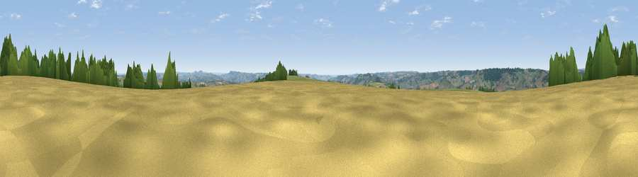

Viewpoint near Yarcombe
#13242 in England · top 28% of its area beats it · near Yarcombe · access?Where it is
The exact computed spot (ST 27775 07175). Click the marker for map links.
Public access: no public right of way or access land is recorded at this exact spot — it may be on private land. Computed from Natural England's CRoW access layer and OpenStreetMap rights of way — not the legal definitive map. Always verify locally.
The view, rendered

A 360° render of this exact spot computed from the terrain model, tree cover and land cover — summer colours, afternoon light, calibrated against photographs of famous viewpoints. Real trees, hedges and buildings will differ in detail.
The panorama
Grey silhouette: terrain skyline in each direction (720 bearings, Earth curvature and refraction included). Dashed green: skyline with trees (+15 m) and buildings (+8 m) as obstacles. Blue strip: how far the ground is visible on each bearing.
Where the view opens
Wedge length = distance to the farthest visible ground on that bearing (vegetation-aware). Rings at 10, 25 and 50 km.
What fills the view
60% grassland · 22% woodland · 17% cropland ·
Angular shares of the visible panorama (visual magnitude), not map area. Landscape diversity 0.43 (0–1 Shannon).
Key numbers
More beautiful places nearby
The staircase of upgrades: each row has a higher view potential than everything closer. Driving times are estimates from straight-line distance, calibrated against real road routing — check an actual route before setting out.
| Place | Direction | Drive | Score |
|---|---|---|---|
| Viewpoint near Membury | SSE · 2 km | ~5 min | 65.0 |
| Viewpoint near Combe St Nicholas | NNE · 5 km | ~12 min | 67.9 |
| Viewpoint near Buckland St. Mary | N · 8 km | ~17 min | 72.2 |
| Viewpoint near Buckland St. Mary | N · 9 km | ~17 min | 77.3 |
| Lambert's Castle Hill | SE · 12 km | ~23 min | 78.7 |
| Viewpoint near Burstock | ESE · 15 km | ~27 min | 81.8 |
| Lewesdon Hill | ESE · 17 km | ~30 min | 83.3 |
| Golden Cap | SE · 20 km | ~34 min | 88.7 |
50.85956, -3.02755 · source: screening · position refined by local search. Computed location — check access rights before visiting.